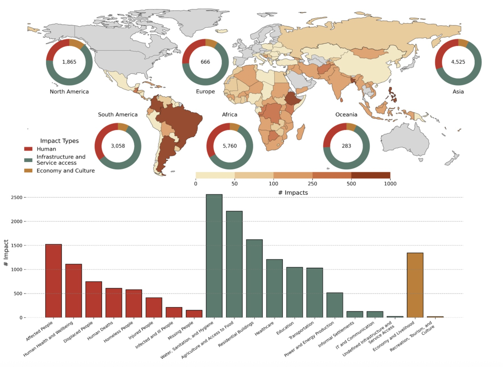
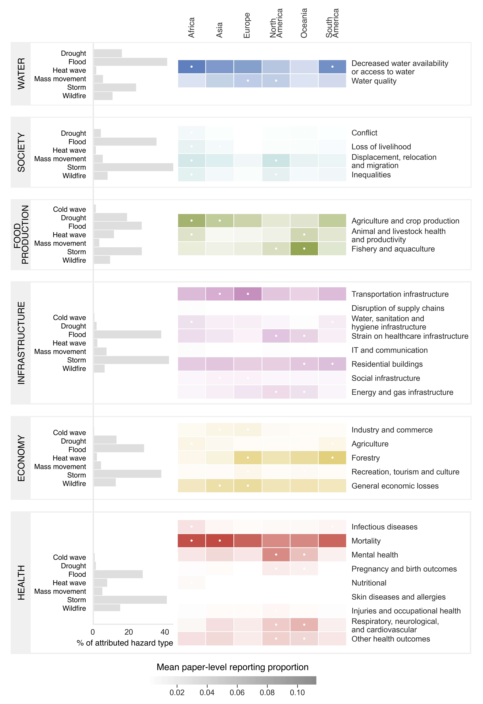

import os
# Option 1: OpenAI
# pip install openai
# Set your key once in the terminal: export OPENAI_API_KEY='sk-...'
# from openai import OpenAI
# client = OpenAI(api_key=os.environ['OPENAI_API_KEY'])
# MODEL = 'gpt-4o-mini'
# Option 2: Groq
# pip install groq
# Set your key: export GROQ_API_KEY='gsk_...'
# from groq import Groq
# client = Groq(api_key=os.environ['GROQ_API_KEY'])
# MODEL = 'llama-3.1-8b-instant'
# Option 3: HuggingFace Inference API
# pip install huggingface_hub
# Set your key: export HF_TOKEN='hf_...'
# from huggingface_hub import InferenceClient
# client = InferenceClient(model='mistralai/Mistral-7B-Instruct-v0.3',
# token=os.environ['HF_TOKEN'])
# MODEL = 'mistralai/Mistral-7B-Instruct-v0.3'
# Option 4: Anthropic
# pip install anthropic
# Set your key: export ANTHROPIC_API_KEY='sk-ant-...'
# import anthropic
# client = anthropic.Anthropic(api_key=os.environ['ANTHROPIC_API_KEY'])
# MODEL = 'claude-haiku-4-5'EGU short course: Compound Events and Multi-Hazard Analytics
Natural Language Processing for extracting structured information on climate impacts from text
Author: Taís M. Nunes Carvalho | Helmholtz Centre for Environmental Research (UFZ)
Goals
Scientific reports, news articles, and disaster databases contain rich descriptions of compound weather events and their impacts, however, this information is hidden in unstructured text. Natural Language Processing (NLP) lets us extract structured, machine-readable information at scale.
This tutorial shows how to use a Large Language Model (LLM) to extract structured information about the impacts of extreme climate events from newspaper articles and, critically, how to evaluate the quality of those extractions.
Our goal is to understand how text can become usable data for climate risk analysis.
We extract five types of information:
| Type | Fields |
|---|---|
| Location | Country, region, water basin |
| Hazard type | Code & subtype (multi-hazard supported) |
| Hazard date | Year, month, day |
| Quantitative impacts | List of (impactType, impactSubtype, impactValue, impactUnit) records |
| Qualitative impacts | Six classes (water, society, food_production, infrastructure, economy, health) |
Quantitative vocabulary
impactType |
impactSubtype |
typical impactUnit |
|---|---|---|
Human |
Number of deaths · Number of affected people · Number of displaced people | people, families |
Infrastructure and Service access |
Residential buildings · Transportation · Healthcare · Utilities · Education | homes, schools, bridges, hospitals, power substations, … |
Economy and Culture |
Economy · Tourism and culture | USD, EUR, PHP, … |
impactSubtype is extensible. You can start with this list and extend it for your own corpus.
For this tutorial, we will not need any API. Pre-computed results are included so you can follow the full evaluation workflow immediately.
Be aware! A short note on the responsible use of LLMs
Large language models (LLMs) can be powerful tools for processing large volumes of text, but their use requires careful validation and critical interpretation. Before adopting an LLM-based approach, it is worth asking whether simpler, more interpretable alternatives could serve the same purpose. When LLMs are indeed the right tool, four principles should guide their use: proportionality (is the model truly necessary for this task?), safety (avoid sharing sensitive or confidential data in prompts), quality (always verify the model’s outputs — they may be plausible but incorrect, incomplete, or biased), and transparency (disclose when and how AI was used in your research). In the context of this tutorial, LLM outputs should be treated as a starting point for analysis, not as ground truth: extracted information must be validated against the original source texts, and any systematic patterns of error should be documented and reported.
Setup
API Key Configuration
To call a hosted LLM you need an API key from your chosen provider. The table below summarises some options currently available. They all work with the same extraction code in Step 4, only the client initialisation differs.
| Provider | Model example | Free tier | Sign-up link |
|---|---|---|---|
| OpenAI | gpt-4o-mini |
No (credits on sign-up) | platform.openai.com |
| Groq | llama-3.1-8b-instant |
Yes (rate-limited) | console.groq.com |
| HuggingFace | mistralai/Mistral-7B-Instruct-v0.3 |
Yes (Inference API) | huggingface.co/settings/tokens |
| Anthropic | claude-haiku-3-5 |
No (credits on sign-up) | console.anthropic.com |
You do not need to do this now. Pre-computed results are included so you can run the full evaluation workflow without any API key. Come back to this cell when you want to run extractions on your own text data. The safest way to store a key is as an environment variable (never paste it directly into a shared or version-controlled notebook).
Libraries
import re, json
import numpy as np
import pandas as pd
import matplotlib
import matplotlib.pyplot as plt
import matplotlib.patches as mpatches
import matplotlib.colors as mcolorsdef bow_cosine_similarity(texts):
"""Pairwise cosine similarity using bag-of-words vectors.
Effective for near-duplicate detection because it rewards shared vocabulary
without penalizing frequently occurring words."""
def tokenize(t):
return re.findall(r"\b[a-z]+\b", t.lower())
tokenized = [tokenize(t) for t in texts]
vocab = sorted(set(w for doc in tokenized for w in doc))
vi = {w: i for i, w in enumerate(vocab)}
mat = np.zeros((len(tokenized), len(vocab)))
for i, doc in enumerate(tokenized):
for w in doc:
mat[i, vi[w]] += 1
norms = np.linalg.norm(mat, axis=1, keepdims=True)
norms[norms == 0] = 1
n = mat / norms
return n @ n.TWe implement bag-of-words cosine similarity by hand here so the arithmetic is visible, but in reality you would normally use a library function. With scikit-learn, the same step is two lines:
from sklearn.feature_extraction.text import CountVectorizer
from sklearn.metrics.pairwise import cosine_similarity
vectors = CountVectorizer().fit_transform(texts)
sim_matrix = cosine_similarity(vectors)Use the built-in unless you have a specific reason not to: the library versions are well-tested and faster on large corpora.
Our dataset
In this tutorial, we will work with a small synthetic corpus of ten short news articles as a CSV file at data/articles.csv.
from pathlib import Path
import pandas as pd
DATA_DIR = Path("data")
# read the corpus from a CSV
articles_df = pd.read_csv(DATA_DIR / "articles.csv")articles_df.head(3)| doc_id | title | text | |
|---|---|---|---|
| 0 | doc_1 | Severe Flooding Devastates Southeastern Bangla... | Severe monsoon flooding hit southeastern Ban... |
| 1 | doc_2 | Bangladesh Flood Update: Death Toll Rises to 52 | UPDATED — Severe monsoon flooding hit southeas... |
| 2 | doc_3 | Prolonged Drought Threatens 1.2 Million in Nor... | A prolonged drought gripping the Horn of Afric... |
# convert the DataFrame into a dict-of-dicts shape
raw_articles = {
row.doc_id: {"title": row.title, "text": row.text}
for row in articles_df.itertuples(index=False)
}for k, v in raw_articles.items():
print(f" {k}: {v['title']}") doc_1: Severe Flooding Devastates Southeastern Bangladesh
doc_2: Bangladesh Flood Update: Death Toll Rises to 52
doc_3: Prolonged Drought Threatens 1.2 Million in Northern Kenya
doc_4: Hurricane Elena Kills 89 in Western Cuba
doc_5: VC Funding Drought Deepens as Interest Rates Stay High
doc_6: Brazil Wins Copa America Final in Penalty Shootout
doc_7: Typhoon Maring Triggers Deadly Floods and Landslides Across Luzon
doc_8: Severe Cold Wave Devastates Mongolian Herders
doc_9: Compound Heatwave and Wildfires Ravage Southern Greece
doc_10: Drought-Driven Heatwave Strains Power Grid in Central United StatesStep 1: text filtering
Are the articles reporting an extreme event?
In practice you start with a large mixed corpus of articles on many subjects scraped from news sites. To filter off-topic articles, one option is to use a vocabulary of climate event keywords. It is fast and it does not require a model.
Limitation: keyword matching might not work for all cases.
- False negatives: an article describing crop losses and food insecurity caused by extreme heat may never use the words drought, heatwave, or extreme temperature, focusing instead on reduced yields, parched soil, or humanitarian crisis. No synonym list can recover an article that never names the hazard.
- False positives:
droughtalso appears in financial journalism (funding drought, talent drought), as we will see withdoc_5.
A more robust approach would be to train a text classifier on a manually annotated set of relevant vs. irrelevant articles, or to use an LLM as a relevance judge, but that is outside the scope of this tutorial.
| Code | Hazard | Example keywords |
|---|---|---|
GEN |
General / multi-hazard | multi-hazard, compound hazard |
DRT |
Drought | drought, dry spell, water shortage, rainfall deficit |
FLOOD |
Flood | flood, inundation, glacial lake outburst |
STRM |
Storm | storm, hurricane, typhoon, tornado, blizzard, storm surge |
HWV |
Heatwave | heatwave, heat wave, extreme heat, heat stress |
CWV |
Cold wave | cold wave, cold snap, extreme cold |
MASSMOV |
Mass movement | landslide, mudslide, rock fall |
FIRE |
Wildfire | wildfire, forest fire, bush fire |
HAZARD_KEYWORDS = {
"GEN": ["multi-hazard", "several hazards", "compound hazard"],
"DRT": [
"drought",
"dry spell",
"dryness",
"rain scarcity",
"rainfall deficit",
"water stress",
"water shortage",
"groundwater depletion",
"reservoir depletion",
],
"FLOOD": ["flood", "inundation", "glacial lake outburst"],
"STRM": [
"storm",
"superstorm",
"windstorm",
"snowstorm",
"blizzard",
"derecho",
"winter storm",
"hail",
"extratropical cyclone",
"thunderstorm",
"tornado",
"tropical cyclone",
"storm surge",
"hurricane",
"typhoon",
"cyclone",
"strong winds",
],
"HWV": [
"heatwave",
"heat wave",
"heat episode",
"heatspell",
"hotspell",
"heat stress",
"extreme temperature",
"extreme heat",
"hot weather",
],
"CWV": [
"cold wave",
"coldwave",
"cold-wave",
"severe winter conditions",
"cold spell",
"cold snap",
"extreme cold",
"cold weather",
],
"MASSMOV": ["landslide", "rock fall", "mudslide", "mass movement"],
"FIRE": ["forest fire", "wildfire", "wild fire", "land fire", "bush fire"],
}
def detect_hazard_codes(text, hazard_keywords):
"""Returns the list of hazard codes whose keywords appear in text."""
text_lower = text.lower()
return [
code
for code, keywords in hazard_keywords.items()
if any(kw in text_lower for kw in keywords)
]
def keyword_filter(articles, hazard_keywords):
"""Keep articles that match at least one hazard code; tag each with matched codes."""
kept = {}
for doc_id, doc in articles.items():
codes = detect_hazard_codes(doc["text"], hazard_keywords)
if codes:
doc["hazard_codes"] = codes
kept[doc_id] = doc
print(f"{doc_id} hazard codes: {codes}")
else:
print(f"{doc_id} no hazard keywords found")
return keptfiltered = keyword_filter(raw_articles, HAZARD_KEYWORDS)doc_1 hazard codes: ['FLOOD']
doc_2 hazard codes: ['FLOOD']
doc_3 hazard codes: ['DRT']
doc_4 hazard codes: ['STRM']
doc_5 hazard codes: ['DRT']
doc_6 no hazard keywords found
doc_7 hazard codes: ['FLOOD', 'STRM', 'MASSMOV']
doc_8 hazard codes: ['CWV']
doc_9 hazard codes: ['HWV', 'FIRE']
doc_10 hazard codes: ['DRT', 'HWV']Going further: text classification
Keyword filtering is fast and interpretable, but it relies on a fixed vocabulary and will miss articles that describe a climate event without using the expected terms. A complementary approach is to train a text classifier — for example a fine-tuned BERT-based model — to distinguish climate-related articles from off-topic ones. Classifiers can generalise better to unseen phrasing and reduce false positives like doc_5, at the cost of requiring labelled training data and more compute. In practice, keyword filtering and classification are often combined: keywords can provide a fast first pass and the classifier refines the result.
Step 2: text cleaning
Noisy text hinders both deduplication (step 3) and LLM extraction (step 4), but there is a practical cost argument too: hosted LLMs charge by the token. URLs, HTML tags, and repeated whitespace are pure noise from the model’s perspective and they consume tokens without contributing information. Removing them before sending text to the API directly reduces cost, and also keeps each request within the model’s context window, which matters when processing long articles.
We apply three simple transformations:
- Remove URLs
- Remove HTML tags (if any)
- Normalise whitespace (line breaks, tabs, double spaces)
def clean_text(text):
# remove URLs
text = re.sub(r"https?://\S+|www\.\S+", "", text)
# remove HTML tags
text = re.sub(r"<[^>]+>", "", text)
# normalize all whitespace (newlines, tabs, multiple spaces)
text = re.sub(r"\s+", " ", text)
return text.strip()
# apply cleaning and store in a new field
for doc in filtered.values():
doc["text_clean"] = clean_text(doc["text"])print("Before:")
print(repr(filtered["doc_1"]["text"]))
print("\nAfter:")
print(repr(filtered["doc_1"]["text_clean"]))Before:
'Severe monsoon flooding hit southeastern Bangladesh on August 14, 2024,\n\nleaving at least 47 people dead and forcing more than 85,000 residents from their homes. Read the full report at https://www.example-news.com/bangladesh-floods-2024.\nThe disaster has affected an estimated 200,000 people across five districts. Floodwaters overflowed the banks of the Meghna and Jamuna rivers, inundating hundreds of villages and destroying 15 bridges along key transport corridors. Roads have been rendered impassable in many areas. Contaminated water supplies have raised concerns among health officials, who warn of a heightened risk of waterborne diseases such as cholera and typhoid. Local authorities have set up temporary shelters in schools and community centers to house displaced families. Updates: https://example-news.com/live'
After:
'Severe monsoon flooding hit southeastern Bangladesh on August 14, 2024, leaving at least 47 people dead and forcing more than 85,000 residents from their homes. Read the full report at The disaster has affected an estimated 200,000 people across five districts. Floodwaters overflowed the banks of the Meghna and Jamuna rivers, inundating hundreds of villages and destroying 15 bridges along key transport corridors. Roads have been rendered impassable in many areas. Contaminated water supplies have raised concerns among health officials, who warn of a heightened risk of waterborne diseases such as cholera and typhoid. Local authorities have set up temporary shelters in schools and community centers to house displaced families. Updates:'Step 3: deduplication
News events are often covered by multiple articles that are nearly identical (press releases, updates repeating most of the original text). Keeping duplicates would inflate any statistics derived from the corpus.
Here, we use bag-of-words cosine similarity to find these duplicated articles. Pairs with similarity ≥ 0.8 are considered duplicates. We keep the latest article in each pair, on the assumption that a more recent article contains updated figures (e.g. a revised death toll) and is therefore more informative.
def deduplicate(articles, threshold=0.8):
ids = list(articles.keys())
texts = [articles[k]["text_clean"] for k in ids]
sim_matrix = bow_cosine_similarity(texts)
to_remove = set()
for i in range(len(ids)):
for j in range(i + 1, len(ids)):
if sim_matrix[i, j] >= threshold and ids[i] not in to_remove:
to_remove.add(ids[i]) # keep the later article (ids[j])
print(
f"{ids[i]} removed as near-duplicate of {ids[j]} "
f"(similarity = {sim_matrix[i, j]:.2f})"
)
deduped = {k: v for k, v in articles.items() if k not in to_remove}
return deduped, sim_matrix, idsprint("Deduplication (threshold = 0.80):")
deduped, sim_mat, ids = deduplicate(filtered)
print(f"\n{len(deduped)}/{len(filtered)} articles remain after deduplication.")
for k in deduped:
print(f" {k}: {deduped[k]['title']}")Deduplication (threshold = 0.80):
doc_1 removed as near-duplicate of doc_2 (similarity = 0.93)
8/9 articles remain after deduplication.
doc_2: Bangladesh Flood Update: Death Toll Rises to 52
doc_3: Prolonged Drought Threatens 1.2 Million in Northern Kenya
doc_4: Hurricane Elena Kills 89 in Western Cuba
doc_5: VC Funding Drought Deepens as Interest Rates Stay High
doc_7: Typhoon Maring Triggers Deadly Floods and Landslides Across Luzon
doc_8: Severe Cold Wave Devastates Mongolian Herders
doc_9: Compound Heatwave and Wildfires Ravage Southern Greece
doc_10: Drought-Driven Heatwave Strains Power Grid in Central United StatesStep 3: impacts extraction
Extraction schema
Each article is mapped to a single JSON object:
| Field | Type | Description |
|---|---|---|
startYear, startMonth, startDay, endYear, startMonth, endDay |
int or None | Event start / end dates |
hazards |
list of {code, subtype} |
One entry per hazard. Compound events list every hazard. |
location |
object | country, city, waterbasin |
quantitative |
list of records | Each record: {impactType, impactSubtype, impactValue, impactUnit} |
qualitative |
object | One slot per class: null or {phrases: [...]} |
Hazard codes (same vocabulary used in keyword filtering and LLM extraction): GEN · DRT · FLOOD · STRM · HWV · CWV · MASSMOV · FIRE
How to validate model outputs
It is essential to keep a high level of skepticism about the content produced by generative AI. The output may be correct and valid, or it may not. It is always necessary to verify its quality, regardless of what the model providers are promising in terms of performance.
Gold standard annotations
Why build a gold standard?
An extraction that looks correct may still contain fabricated numbers, misidentified hazard types, or sentences taken out of context. The only way to know how well a model performs on your specific corpus and task is to compare its outputs against answers produced independently by human experts. This manually annotated data is usually called a gold standard.
A gold standard serves three purposes:
- Measuring quality — concrete metrics (precision, recall, F1, exact-match accuracy) on the extracted information.
- Identifying failure modes — systematic errors (e.g. the model consistently misses the
waterclass, or hallucinates death tolls) only become visible when you compare at scale against a reference. - Enabling iteration — once you can measure performance, you can improve it: refine the prompt, add few-shot examples, or filter out unreliable fields.
How to annotate
Why build a gold standard?
An extraction that looks correct may still contain fabricated numbers, misidentified hazard types, or phrases taken out of context. The only way to know how well a model performs on your specific corpus and task is to compare its outputs against answers produced independently by human experts. This manually annotated data is usually called a gold standard.
A gold standard serves three purposes:
- Measuring quality — it gives you concrete metrics (precision, recall, F1, exact-match accuracy) on the extracted information.
- Identifying failure modes — systematic errors (e.g. the model consistently misses the
waterclass, or hallucinates death tolls) only become visible when you compare at scale against a reference. - Enabling iteration — once you can measure performance, you can improve it: refine the prompt, add few-shot examples, or filter out unreliable fields.
How to annotate
1. Write annotation guidelines before you start
Define every field precisely: What counts as displaced? Does temporary evacuation count? What if a range is given (between 10,000 and 15,000 people)? Ambiguities discovered during annotation should be resolved in the guidelines, not left to each annotator’s judgment.
2. Use at least two independent annotators
Have each annotator label the same set of articles without seeing each other’s work. This reveals ambiguities in the task and in the source text.
3. Measure inter-annotator agreement (IAA)
Before treating any annotations as ground truth, quantify how much the annotators agree. Common metrics are:
- Cohen’s κ (kappa) for categorical fields (qualitative classes)
- Percentage agreement for numerical fields (deaths, displaced)
- Span overlap / F1 for sentence extraction
A κ below ~0.6 indicates the task definition is unclear and the guidelines need revision. Do not proceed to model evaluation until IAA is acceptable.
4. Resolve disagreements
A third annotator or a discussion session resolves cases where the first two disagreed. The labels become the gold standard.
5. Tools for annotation
For small corpora, a shared spreadsheet works fine. For larger projects, annotation platforms such as Label Studio (free, open-source) provide structured interfaces, built-in IAA calculation, and export to standard formats.
How large should the gold standard be?
For exploratory work, 30–50 articles should be enough to reveal the main possible failures. For publication-quality evaluation, aim for ≥ 100 articles, stratified by hazard type and geographic region to avoid evaluation bias.
Storage format
We save the gold standard as JSONL (data/gold_standard.jsonl), one JSON object per line. JSONL is the standard for this kind of data because it is line-delimited (you can for example head a file to inspect it) and it is append-friendly, which matters because annotations and LLM outputs are typically produced one record at a time.
import json
def load_jsonl(path):
"""Read a JSONL file into a {doc_id: record} dict.
JSONL = one JSON object per line.
"""
out = {}
with open(path, encoding="utf-8") as f:
for line in f:
line = line.strip()
if not line:
continue
rec = json.loads(line)
doc_id = rec.pop("doc_id")
out[doc_id] = rec
return out
gold_standard = load_jsonl(DATA_DIR / "gold_standard.jsonl")print("doc_1:")
import pprint
pprint.pp(gold_standard["doc_1"], depth=3, sort_dicts=False)doc_1:
{'startYear': 2024,
'startMonth': 8,
'startDay': 14,
'endYear': None,
'endMonth': None,
'endDay': None,
'hazards': [{'code': 'FLOOD', 'subtype': 'River flood'}],
'location': {'country': 'Bangladesh',
'city': None,
'waterbasin': 'Meghna, Jamuna'},
'quantitative': [{'impactType': 'Human',
'impactSubtype': 'Number of deaths',
'impactValue': 47,
'impactUnit': 'people'},
{'impactType': 'Human',
'impactSubtype': 'Number of affected people',
'impactValue': 200000,
'impactUnit': 'people'},
{'impactType': 'Human',
'impactSubtype': 'Number of displaced people',
'impactValue': 85000,
'impactUnit': 'people'},
{'impactType': 'Infrastructure and Service access',
'impactSubtype': 'Transportation',
'impactValue': 15,
'impactUnit': 'bridges'}],
'qualitative': {'water': {'phrases': [...]},
'society': {'phrases': [...]},
'food_production': None,
'infrastructure': {'phrases': [...]},
'economy': None,
'health': {'phrases': [...]}}}Prompting strategy
We use zero-shot prompting: the model receives only a task description and an output schema, and no labelled examples. This is a practical starting point because it requires no annotated training data. The main lever for improving quality without examples is prompt clarity: precise field definitions, explicit rules for edge cases, and a tight output schema.
Two design choices matter most for structured extraction:
- Constrain the output vocabulary. Instead of asking for a free-text hazard description, we give the model an explicit list of codes (
GEN,DRT,FLOOD, …). This reduces the variety of outputs and makes evaluation straightforward. - Request JSON directly. Asking for a JSON object makes the output machine-readable and enables automated evaluation. Set
temperature=0to reduce randomness (lower temperature is generally better for structured tasks where creativity is unwanted).
Defining the schema in Python
Before writing the prompt, it is good practice to define the expected output structure as Python types. Using TypedDict and Literal from the typing module serves as a single source of truth: the schema lives in code, not only in a prose description buried in a prompt string. Literal explicitly enumerates the allowed values for constrained fields, the same codes used in the keyword filter, making type violations detectable automatically during post-processing.
from typing import Optional, List, Literal
try:
from typing import TypedDict
except ImportError:
from typing_extensions import TypedDict
# constrained vocabularies
HazardCode = Literal["GEN", "DRT", "FLOOD", "STRM", "HWV", "CWV", "MASSMOV", "FIRE"]
QualClass = Literal[
"water", "society", "food_production", "infrastructure", "economy", "health"
]
# quantitative-impact taxonomy
ImpactType = Literal[
"Human", "Infrastructure and Service access", "Economy and Culture"
]
HUMAN_SUBTYPES = [
"Number of deaths",
"Number of affected people",
"Number of displaced people",
]
INFRA_SUBTYPES = [
"Residential buildings",
"Transportation",
"Healthcare",
"Utilities",
"Education",
]
ECON_SUBTYPES = ["Economy", "Tourism and culture"]
ALL_SUBTYPES = HUMAN_SUBTYPES + INFRA_SUBTYPES + ECON_SUBTYPES
# output schema as Python types
class Hazard(TypedDict):
code: HazardCode
subtype: Optional[str]
class Location(TypedDict):
country: Optional[str]
city: Optional[str]
waterbasin: Optional[str]
class QuantImpact(TypedDict):
impactType: ImpactType
impactSubtype: str
impactValue: float
impactUnit: str # "people", "homes", "USD"
class QualEvidence(TypedDict):
phrases: List[str]
class Qualitative(TypedDict):
water: Optional[QualEvidence]
society: Optional[QualEvidence]
food_production: Optional[QualEvidence]
infrastructure: Optional[QualEvidence]
economy: Optional[QualEvidence]
health: Optional[QualEvidence]
class ExtractionResult(TypedDict):
startYear: Optional[int]
startMonth: Optional[int]
startDay: Optional[int]
endYear: Optional[int]
endMonth: Optional[int]
endDay: Optional[int]
hazards: List[Hazard]
location: Location
quantitative: List[QuantImpact]
qualitative: Qualitative
# valid sets, used in post-processing
VALID_HAZARD_CODES = set(HazardCode.__args__)
VALID_QUAL_CLASSES = set(QualClass.__args__)
VALID_IMPACT_TYPES = set(ImpactType.__args__)print("Valid hazard codes:", VALID_HAZARD_CODES)
print("Valid qual classes:", VALID_QUAL_CLASSES)
print("Valid impact types:", VALID_IMPACT_TYPES)Valid hazard codes: {'HWV', 'FLOOD', 'STRM', 'MASSMOV', 'GEN', 'CWV', 'DRT', 'FIRE'}
Valid qual classes: {'food_production', 'infrastructure', 'water', 'society', 'health', 'economy'}
Valid impact types: {'Human', 'Economy and Culture', 'Infrastructure and Service access'}System prompt
The prompt is assembled by a small factory, build_prompt(role, schema, rules, examples), so each component lives in a named variable instead of being baked into one long string. To compare two prompt designs, you only need to change the piece you want to vary (e.g. swap rules or add examples) and call build_prompt again. The default call reproduces the original zero-shot prompt.
In production pipelines it is also common to generate the schema block programmatically from Python types (e.g. with pydantic and .model_json_schema()), keeping the two in sync automatically. We write it manually here for clarity.
Structured output APIs (available from some providers) bypass the need for JSON instructions entirely: the model output is constrained at the token level to conform to a schema. HuggingFace’s outlines library does this for open-weight models. When available, this is more reliable than prompt-only JSON requests, but requires the model to be run locally or via a compatible endpoint.
# Each prompt component is a separate argument so you can keep most of the prompt fixed and
# vary one piece when comparing prompt versions
DEFAULT_ROLE = "You are an expert in climate disaster impact analysis."
DEFAULT_SCHEMA = """{
"startYear": <integer or null>,
"startMonth": <integer or null>,
"startDay": <integer or null>,
"endYear": <integer or null>,
"endMonth": <integer or null>,
"endDay": <integer or null>,
"hazards": [
{
"code": "<GEN | DRT | FLOOD | STRM | HWV | CWV | MASSMOV | FIRE>",
"subtype": "<specific subtype, e.g. River flood, Tropical cyclone, or null>"
}
/* ONE ENTRY PER HAZARD. Compound events MUST list every hazard. */
],
"location": {
"country": "<country name or null>",
"city": "<city, district, or sub-national area, or null>",
"waterbasin": "<river, lake, or water body associated with the event, or null>"
},
"quantitative": [
/* ONE RECORD PER NUMERIC IMPACT. Use the controlled vocabulary below. */
{
"impactType": "Human" | "Infrastructure and Service access" | "Economy and Culture",
"impactSubtype": "<one of the suggested subtypes for the chosen impactType>",
"impactValue": <number>,
"impactUnit": "<unit string, e.g. people, families, homes, schools, bridges, USD>"
}
],
"qualitative": {
"water": null OR {"phrases": ["<verbatim phrase>", ...]},
"society": null OR {"phrases": ["<verbatim phrase>", ...]},
"food_production": null OR {"phrases": ["<verbatim phrase>", ...]},
"infrastructure": null OR {"phrases": ["<verbatim phrase>", ...]},
"economy": null OR {"phrases": ["<verbatim phrase>", ...]},
"health": null OR {"phrases": ["<verbatim phrase>", ...]}
}
}"""
DEFAULT_QUANT_VOCAB = {
"Human": [
"Number of deaths",
"Number of affected people",
"Number of displaced people",
],
"Infrastructure and Service access": [
"Residential buildings",
"Transportation",
"Healthcare",
"Utilities",
"Education",
],
"Economy and Culture": ["Economy", "Tourism and culture"],
}
DEFAULT_RULES = [
"Use null for any field not explicitly mentioned in the article.",
"Dates refer to when the disaster event started/ended, not the publication date.",
"Use ONLY the hazard codes listed above (GEN/DRT/FLOOD/STRM/HWV/CWV/MASSMOV/FIRE).",
"MULTI-HAZARD: if the article describes a compound event, list every hazard "
"as a separate entry in `hazards` (e.g. a typhoon that triggers floods and "
"landslides yields three entries: STRM, FLOOD, MASSMOV).",
"QUANTITATIVE: produce one record per numeric impact mentioned in the text. "
"Each record must have impactType, impactSubtype, impactValue, impactUnit. "
"impactValue MUST be a value that is explicitly stated in the article — "
"do not infer or estimate.",
"QUALITATIVE: every one of the six classes is a separate slot. For each "
"class, return null when the article gives no evidence, otherwise return "
'{"phrases": [...]} with verbatim supporting text.',
"Phrases must be copied verbatim or near-verbatim from the article.",
"Return ONLY the JSON — no markdown, no explanation.",
]
def _format_vocab(vocab: dict) -> str:
lines = ["Suggested impactSubtype values (you may extend if nothing fits):"]
for t, subs in vocab.items():
lines.append(f" - {t}: " + ", ".join(subs))
return "\n".join(lines)
def build_prompt(
role: str = DEFAULT_ROLE,
schema: str = DEFAULT_SCHEMA,
rules: list = None,
quant_vocab: dict = None,
examples: list = None,
) -> str:
"""Assemble a system prompt from interchangeable components.
role : str
Opening line / persona.
schema : str
JSON template describing the exact output structure.
rules : list of str
Rules constraining the model output.
quant_vocab : dict[str, list[str]]
Mapping from impactType to its allowed impactSubtype values.
examples : list of {"input": str, "output": dict}
Optional few-shot examples. None / [] means zero-shot.
"""
if rules is None:
rules = DEFAULT_RULES
if quant_vocab is None:
quant_vocab = DEFAULT_QUANT_VOCAB
parts = [
role.strip(),
"",
"Extract structured information from the news article and return a single",
"valid JSON object with this exact structure:",
"",
schema.strip(),
"",
_format_vocab(quant_vocab),
"",
"Rules:",
]
parts.extend(f"- {r}" for r in rules)
if examples:
parts.extend(["", "Examples:"])
for ex in examples:
parts.append("ARTICLE:")
parts.append(ex["input"].strip())
parts.append("OUTPUT:")
parts.append(json.dumps(ex["output"], indent=2, ensure_ascii=False))
parts.append("")
return "\n".join(parts)# default zero-shot prompt
SYSTEM_PROMPT = build_prompt()
print(SYSTEM_PROMPT[:700], "...")You are an expert in climate disaster impact analysis.
Extract structured information from the news article and return a single
valid JSON object with this exact structure:
{
"startYear": <integer or null>,
"startMonth": <integer or null>,
"startDay": <integer or null>,
"endYear": <integer or null>,
"endMonth": <integer or null>,
"endDay": <integer or null>,
"hazards": [
{
"code": "<GEN | DRT | FLOOD | STRM | HWV | CWV | MASSMOV | FIRE>",
"subtype": "<specific subtype, e.g. River flood, Tropical cyclone, or null>"
}
/* ONE ENTRY PER HAZARD. Compound events MUST list every hazard. */
],
"location": {
"country": "<country name ...Saving LLM outputs
When you run an LLM over a real corpus, two things are important:
- Don’t lose progress. Calls cost money or rate-limit quota; if your notebook crashes after 800 of 1,000 articles, you do not want to redo them.
- Keep the raw output around. You will iterate on post-processing and evaluation, and you do not want to re-call the LLM each time.
The standard pattern is to write each extraction to a JSONL file as soon as it is produced, appending one line per article. This is robust to crashes (if the process dies, every line up to that point is intact), resumable (read the file back and skip doc_ids you have already seen), and is the same format used by data/gold_standard.jsonl above.
The two helpers below help you with that: save_extraction for the per-article append, and load_jsonl for reading the file back.
def save_extraction(doc_id: str, result: dict, path) -> None:
"""Append one extraction to a JSONL file."""
record = {"doc_id": doc_id, **result}
with open(path, "a", encoding="utf-8") as f:
f.write(json.dumps(record, ensure_ascii=False) + "\n")
def already_done(path) -> set:
"""Return the set of doc_ids already saved in `path` (for resuming)."""
if not Path(path).exists():
return set()
done = set()
with open(path, encoding="utf-8") as f:
for line in f:
line = line.strip()
if line:
done.add(json.loads(line)["doc_id"])
return donePretend we just got an extraction back from the LLM and want to persist it.
demo_path = DATA_DIR / "demo_extractions.jsonl"
open(demo_path, "w").close()
fake_result = {
"startYear": 2024,
"startMonth": 1,
"startDay": 12,
"endYear": None,
"endMonth": None,
"endDay": None,
"hazards": [{"code": "CWV", "subtype": "Dzud"}],
"location": {"country": "Mongolia", "city": None, "waterbasin": None},
"quantitative": {
"affected_people": 700000,
"deaths": 23,
"displaced": 12000,
"infrastructure_affected": [],
},
"qualitative": {
"water": None,
"society": None,
"food_production": None,
"infrastructure": None,
"economy": None,
"health": None,
},
}
save_extraction("doc_8", fake_result, demo_path)
save_extraction("doc_8", fake_result, demo_path)
print("demo_extractions.jsonl now contains:")
print(open(demo_path).read())
print("Already done IDs:", already_done(demo_path))
try:
demo_path.unlink()
except OSError:
passdemo_extractions.jsonl now contains:
{"doc_id": "doc_8", "startYear": 2024, "startMonth": 1, "startDay": 12, "endYear": null, "endMonth": null, "endDay": null, "hazards": [{"code": "CWV", "subtype": "Dzud"}], "location": {"country": "Mongolia", "city": null, "waterbasin": null}, "quantitative": {"affected_people": 700000, "deaths": 23, "displaced": 12000, "infrastructure_affected": []}, "qualitative": {"water": null, "society": null, "food_production": null, "infrastructure": null, "economy": null, "health": null}}
{"doc_id": "doc_8", "startYear": 2024, "startMonth": 1, "startDay": 12, "endYear": null, "endMonth": null, "endDay": null, "hazards": [{"code": "CWV", "subtype": "Dzud"}], "location": {"country": "Mongolia", "city": null, "waterbasin": null}, "quantitative": {"affected_people": 700000, "deaths": 23, "displaced": 12000, "infrastructure_affected": []}, "qualitative": {"water": null, "society": null, "food_production": null, "infrastructure": null, "economy": null, "health": null}}
Already done IDs: {'doc_8'}Run LLM extractions
Requires a client and MODEL to be set up in the API Key Configuration cell. Pre-computed results are loaded in the next cell, so you can skip this if you don’t have an API key.
# OUTPUT_PATH = DATA_DIR / 'extractions.jsonl'
# done = already_done(OUTPUT_PATH)
# for doc_id, doc in deduped.items():
# user_message = f"TITLE: {doc['title']}\n\nARTICLE:\n{doc['text_clean']}"
# OpenAI / Groq
# response = client.chat.completions.create(
# model=MODEL,
# temperature=0,
# messages=[
# {"role": "system", "content": SYSTEM_PROMPT},
# {"role": "user", "content": user_message},
# ],
# )
# raw_text = response.choices[0].message.content
# try:
# clean = re.sub(r'^```(?:json)?\s*|\s*```$', '', raw_text.strip())
# raw_result = json.loads(clean)
# except json.JSONDecodeError as e:
# print(f'{doc_id}: JSON parse error — {e}\nRaw output:\n{raw_text[:300]}')
# continue
# result = postprocess(raw_result)
# save_extraction(doc_id, result, OUTPUT_PATH)
# print(f'{doc_id}: saved ({len(result["quantitative"])} quant records, '
# f'hazards={[h["code"] for h in result["hazards"]]})')Pre-computed extractions
For the rest of the tutorial we work with a pre-saved JSONL of Mistral-7B-Instruct-v0.3 outputs at data/extractions.jsonl.
extractions = load_jsonl(DATA_DIR / "extractions.jsonl")pprint.pp(extractions["doc_7"], depth=3, sort_dicts=False){'startYear': 2024,
'startMonth': 10,
'startDay': 3,
'endYear': None,
'endMonth': None,
'endDay': None,
'hazards': [{'code': 'STRM', 'subtype': 'Tropical cyclone'},
{'code': 'FLOOD', 'subtype': 'River flood'}],
'location': {'country': 'Philippines', 'city': None, 'waterbasin': 'Cagayan'},
'quantitative': [{'impactType': 'Human',
'impactSubtype': 'Number of deaths',
'impactValue': 134,
'impactUnit': 'people'},
{'impactType': 'Human',
'impactSubtype': 'Number of affected people',
'impactValue': 1800000,
'impactUnit': 'people'},
{'impactType': 'Human',
'impactSubtype': 'Number of displaced people',
'impactValue': 320000,
'impactUnit': 'people'},
{'impactType': 'Infrastructure and Service access',
'impactSubtype': 'Transportation',
'impactValue': 1,
'impactUnit': 'bridges'},
{'impactType': 'Economy and Culture',
'impactSubtype': 'Economy',
'impactValue': 12000000000,
'impactUnit': 'PHP'}],
'qualitative': {'water': {'phrases': [...]},
'society': {'phrases': [...]},
'food_production': {'phrases': [...]},
'infrastructure': {'phrases': [...]},
'economy': {'phrases': [...]},
'health': None}}Post-processing
LLM outputs are probabilistic: even with a clear prompt and low temperature, the model may return numbers as strings, invent hazard codes, or omit required fields. Post-processing turns raw model output into clean, validated records before any downstream use. It should always run between the LLM call and storage or evaluation.
The four most common issues and their fixes:
| Issue | Example | Fix |
|---|---|---|
| Number as string | "deaths": "47" or "1.2 million" |
Parse to int |
| Invalid code | "code": "Flood" instead of "FLOOD" |
Validate against Literal set |
| Missing field | quantitative key absent |
Fill with None / empty list |
| JSON parse error | Model adds prose before { |
Strip and retry |
import re as _re
def parse_number(val):
"""Convert a value to int or float, handling string formats like '1.2 million'."""
if val is None:
return None
if isinstance(val, (int, float)):
return val
if isinstance(val, str):
v = val.lower().replace(",", "").strip()
try:
mul = 1.0
for kw, m in [
("billion", 1e9),
("million", 1e6),
("thousand", 1e3),
(" k", 1e3),
]:
if kw in v:
v = v.replace(kw, "").strip()
mul = m
break
n = float(v) * mul
return int(n) if n == int(n) else n
except ValueError:
return None
return None
def postprocess(raw: dict) -> dict:
"""Validate and clean a single raw LLM extraction.
- hazards: list of {code, subtype}, multi-hazard supported.
- quantitative: list of {impactType, impactSubtype, impactValue, impactUnit}.
- qualitative: dict where each key is a class, value is None or {"phrases": [...]}.
"""
out = {}
# date fields: coerce to int or None
for f in ["startYear", "startMonth", "startDay", "endYear", "endMonth", "endDay"]:
out[f] = parse_number(raw.get(f))
# hazards: keep all valid codes
raw_hazards = raw.get("hazards") or []
out["hazards"] = [
{"code": h.get("code"), "subtype": h.get("subtype")}
for h in raw_hazards
if isinstance(h, dict) and h.get("code") in VALID_HAZARD_CODES
]
invalid_codes = [
h.get("code")
for h in raw_hazards
if isinstance(h, dict) and h.get("code") not in VALID_HAZARD_CODES
]
if invalid_codes:
print(f"Dropped invalid hazard codes: {invalid_codes}")
# location
loc = raw.get("location") or {}
out["location"] = {
"country": loc.get("country"),
"city": loc.get("city"),
"waterbasin": loc.get("waterbasin"),
}
# quantitative: list of records
raw_q = raw.get("quantitative") or []
cleaned = []
invalid_types = []
for rec in raw_q:
if not isinstance(rec, dict):
continue
itype = rec.get("impactType")
if itype not in VALID_IMPACT_TYPES:
invalid_types.append(itype)
continue
cleaned.append(
{
"impactType": itype,
"impactSubtype": rec.get("impactSubtype"),
"impactValue": parse_number(rec.get("impactValue")),
"impactUnit": rec.get("impactUnit"),
}
)
out["quantitative"] = cleaned
if invalid_types:
print(f"Dropped invalid impactType values: {invalid_types}")
# qualitative
qual_in = raw.get("qualitative") or {}
qual_out = {}
for cls in VALID_QUAL_CLASSES:
item = qual_in.get(cls)
if isinstance(item, dict) and item.get("phrases"):
qual_out[cls] = {"phrases": list(item["phrases"])}
else:
qual_out[cls] = None
out["qualitative"] = qual_out
extra = set(qual_in) - VALID_QUAL_CLASSES
if extra:
print(f"Dropped unknown qualitative classes: {extra}")
return out# apply post-processing to pre-computed extractions
extractions_clean = {doc_id: postprocess(raw) for doc_id, raw in extractions.items()}
for doc_id, result in extractions_clean.items():
codes = [h["code"] for h in result["hazards"]]
n_quant = len(result["quantitative"])
print(f" {doc_id}: hazards={codes}, {n_quant} quantitative records")
# use cleaned extractions from here on
extractions = extractions_clean doc_1: hazards=['FLOOD'], 4 quantitative records
doc_3: hazards=['DRT'], 3 quantitative records
doc_4: hazards=['STRM'], 6 quantitative records
doc_7: hazards=['STRM', 'FLOOD'], 5 quantitative records
doc_8: hazards=['CWV'], 4 quantitative records
doc_9: hazards=['HWV', 'FIRE'], 5 quantitative records
doc_10: hazards=['HWV', 'DRT'], 5 quantitative recordsNow, let’s evaluate the model outputs
Evaluation answers the question: how well does the model reproduce what a human annotator would extract? Because the extraction schema covers several very different types of information, we cannot rely on a single metric. Instead we apply the most appropriate measure to each dimension of the output.
| Dimension | Metric |
|---|---|
| Date fields (year/month/day) | Exact-match accuracy per field |
| Hazard type | Exact match |
| Location (country) | Exact match |
| Quantitative | Exact-match accuracy per field |
| Qualitative classes | Precision · Recall · F1 (multi-label) |
A missing year makes it impossible to link an article to a known event; a wrong country sends the record to the wrong region in the database. The table below reports field-by-field accuracy across the three articles in our gold standard, followed by a list of every mismatch.
records = []
for doc_id in gold_standard:
g = gold_standard[doc_id]
e = extractions.get(doc_id, {})
# date fields
for field in [
"startYear",
"startMonth",
"startDay",
"endYear",
"endMonth",
"endDay",
]:
records.append(
{
"doc": doc_id,
"dimension": "date",
"field": field,
"gold": g.get(field),
"extracted": e.get(field),
"match": g.get(field) == e.get(field),
}
)
# hazards
g_codes = {h["code"] for h in g.get("hazards", [])}
e_codes = {h["code"] for h in e.get("hazards", [])}
records.append(
{
"doc": doc_id,
"dimension": "hazard",
"field": "codes (set)",
"gold": sorted(g_codes),
"extracted": sorted(e_codes),
"match": g_codes == e_codes,
}
)
# also report missed / spurious codes for diagnostics
records.append(
{
"doc": doc_id,
"dimension": "hazard",
"field": "missed_codes",
"gold": None,
"extracted": sorted(g_codes - e_codes),
"match": len(g_codes - e_codes) == 0,
}
)
records.append(
{
"doc": doc_id,
"dimension": "hazard",
"field": "spurious_codes",
"gold": None,
"extracted": sorted(e_codes - g_codes),
"match": len(e_codes - g_codes) == 0,
}
)
# subtype agreement, matched code-by-code
g_subs = {h["code"]: h.get("subtype") for h in g.get("hazards", [])}
e_subs = {h["code"]: h.get("subtype") for h in e.get("hazards", [])}
for code in sorted(g_codes | e_codes):
records.append(
{
"doc": doc_id,
"dimension": "hazard",
"field": f"subtype[{code}]",
"gold": g_subs.get(code),
"extracted": e_subs.get(code),
"match": g_subs.get(code) == e_subs.get(code),
}
)
# location
for field in ["country", "city", "waterbasin"]:
g_val = g["location"].get(field)
e_val = e.get("location", {}).get(field)
records.append(
{
"doc": doc_id,
"dimension": "location",
"field": field,
"gold": g_val,
"extracted": e_val,
"match": g_val == e_val,
}
)
meta_df = pd.DataFrame(records)
for dim in ["date", "hazard", "location"]:
subset = meta_df[meta_df["dimension"] == dim]
acc = subset["match"].mean()
print(
f"{dim:12s} accuracy = {acc:.1%} "
f"({subset['match'].sum()}/{len(subset)} fields)"
)
print()
print("Mismatches:")
print(
meta_df[meta_df["match"] == False][
["doc", "dimension", "field", "gold", "extracted"]
].to_string(index=False)
)date accuracy = 100.0% (42/42 fields)
hazard accuracy = 90.6% (29/32 fields)
location accuracy = 95.2% (20/21 fields)
Mismatches:
doc dimension field gold extracted
doc_1 location waterbasin Meghna, Jamuna Meghna and Jamuna rivers
doc_7 hazard codes (set) [FLOOD, MASSMOV, STRM] [FLOOD, STRM]
doc_7 hazard missed_codes None [MASSMOV]
doc_7 hazard subtype[MASSMOV] Landslide NoneQuantitative info
# - exact-match accuracy of the (impactType, impactSubtype, impactValue,
# impactUnit) tuples (set comparison)
# - per-impactType precision / recall / F1 (so we can see e.g. that the
# model is reliable for Human impacts but weaker on Economy)
def to_tuples(records):
return {
(r["impactType"], r["impactSubtype"], r["impactValue"], r["impactUnit"])
for r in records
}
quant_records = []
for doc_id in gold_standard:
g_set = to_tuples(gold_standard[doc_id]["quantitative"])
e_set = to_tuples(extractions.get(doc_id, {}).get("quantitative", []))
tp = len(g_set & e_set)
fp = len(e_set - g_set)
fn = len(g_set - e_set)
p = tp / (tp + fp) if (tp + fp) else 0.0
r = tp / (tp + fn) if (tp + fn) else 0.0
f = 2 * p * r / (p + r) if (p + r) else 0.0
quant_records.append(
{
"doc": doc_id,
"n_gold": len(g_set),
"n_pred": len(e_set),
"tp": tp,
"fp": fp,
"fn": fn,
"precision": round(p, 2),
"recall": round(r, 2),
"f1": round(f, 2),
"missed": sorted(g_set - e_set),
"spurious": sorted(e_set - g_set),
}
)
quant_df = pd.DataFrame(quant_records)
print("Per-document tuple-level accuracy:")
print(
quant_df[
["doc", "n_gold", "n_pred", "tp", "fp", "fn", "precision", "recall", "f1"]
].to_string(index=False)
)
print(
f"\nMacro-avg P={quant_df['precision'].mean():.2f} "
f"R={quant_df['recall'].mean():.2f} "
f"F1={quant_df['f1'].mean():.2f}"
)
# per-impactType breakdown
print("\nPer-impactType accuracy:")
type_rows = []
for itype in VALID_IMPACT_TYPES:
gT = sum(
1
for d in gold_standard
for r in gold_standard[d]["quantitative"]
if r["impactType"] == itype
)
eT = sum(
1
for d in gold_standard
for r in extractions.get(d, {}).get("quantitative", [])
if r["impactType"] == itype
)
tpT = sum(
len(
{
(r["impactSubtype"], r["impactValue"], r["impactUnit"])
for r in gold_standard[d]["quantitative"]
if r["impactType"] == itype
}
& {
(r["impactSubtype"], r["impactValue"], r["impactUnit"])
for r in extractions.get(d, {}).get("quantitative", [])
if r["impactType"] == itype
}
)
for d in gold_standard
)
p = tpT / eT if eT else 0.0
r = tpT / gT if gT else 0.0
f = 2 * p * r / (p + r) if (p + r) else 0.0
type_rows.append(
{
"impactType": itype,
"n_gold": gT,
"n_pred": eT,
"tp": tpT,
"precision": round(p, 2),
"recall": round(r, 2),
"f1": round(f, 2),
}
)
print(pd.DataFrame(type_rows).to_string(index=False))
# concrete mismatches
mismatches = quant_df[(quant_df["fp"] > 0) | (quant_df["fn"] > 0)]
if not mismatches.empty:
print("\nMismatched records:")
for _, row in mismatches.iterrows():
if row["missed"]:
print(f" {row['doc']} MISSED: {row['missed']}")
if row["spurious"]:
print(f" {row['doc']} SPURIOUS: {row['spurious']}")Per-document tuple-level accuracy:
doc n_gold n_pred tp fp fn precision recall f1
doc_1 4 4 3 1 1 0.75 0.75 0.75
doc_3 3 3 3 0 0 1.00 1.00 1.00
doc_4 6 6 6 0 0 1.00 1.00 1.00
doc_7 5 5 5 0 0 1.00 1.00 1.00
doc_8 4 4 4 0 0 1.00 1.00 1.00
doc_9 5 5 5 0 0 1.00 1.00 1.00
doc_10 5 5 5 0 0 1.00 1.00 1.00
Macro-avg P=0.96 R=0.96 F1=0.96
Per-impactType accuracy:
impactType n_gold n_pred tp precision recall f1
Human 18 18 17 0.94 0.94 0.94
Economy and Culture 6 6 6 1.00 1.00 1.00
Infrastructure and Service access 8 8 8 1.00 1.00 1.00
Mismatched records:
doc_1 MISSED: [('Human', 'Number of displaced people', 85000, 'people')]
doc_1 SPURIOUS: [('Human', 'Number of displaced people', 80000, 'people')]Grounding check: are the numbers actually in the text?
Even when an extraction matches the schema and looks plausible, the numeric values can be hallucinated: the model may return a death toll or a displacement count that simply does not appear anywhere in the article.
A cheap and effective sanity check is to verify, for each impactValue returned, that the number can actually be found in the source text in at least one of its common surface forms:
- bare digits (
47) - comma-grouped (
200,000) - scaled (
1.2 million,12 billion,3.5 million) - short-form thousands (
85k)
This does not prove the extraction is correct (the model could still attach the wrong subtype to a real number) but it is an extremely strong filter against fabricated values, and it should run on every record before anything is written to a database.
Known false positives. A record can be flagged as ungrounded even when the value is genuinely supported by the text:
- Spelled-out numbers (
Twelve deaths) — the function only matches digit forms. Extend it with a{ "twelve": 12, ... }map if your corpus uses prose numbers heavily. - Implied counts (e.g. “destroying the Tumauini Bridge” → impactValue=1). This is technically a model inference, not a hallucination; whether you accept it depends on your downstream use case.
So the right reading is: ungrounded == needs human review, not ungrounded == always wrong.
import re
def numeric_surface_forms(value):
"""Return plausible string representations of `value` to look for in text."""
if value is None:
return set()
n = float(value)
if n != n or n == float("inf") or n == float("-inf"):
return set()
forms = set()
int_n = int(n) if n == int(n) else None
if int_n is not None:
forms.add(str(int_n))
forms.add(f"{int_n:,}")
# scaled forms (k / thousand / million / billion)
for div, suffixes in [
(1_000_000_000, ["billion"]),
(1_000_000, ["million"]),
(1_000, ["thousand", "k"]),
]:
if abs(n) >= div:
scaled = n / div
# 1.2, 1.20, 12, 12.0, etc.
for fmt in ("{:.0f}", "{:.1f}", "{:.2f}"):
s = fmt.format(scaled)
if "." in s:
s = s.rstrip("0").rstrip(".")
for suf in suffixes:
forms.add(f"{s} {suf}")
forms.add(f"{s}{suf}")
return forms
def value_in_text(value, text):
"""Return (is_grounded, matching_form). is_grounded is None if value is None."""
if value is None:
return (None, None)
text_low = text.lower()
for form in numeric_surface_forms(value):
# reject only adjacent digits (so "47" doesn't match inside "147" or
# "470") but allow trailing punctuation like "$800 million."
pattern = r"(?<!\d)" + re.escape(form.lower()) + r"(?!\d)"
if re.search(pattern, text_low):
return (True, form)
return (False, None)
def check_grounding(extractions, articles):
"""For every quantitative record, check whether impactValue is in the text."""
rows = []
for doc_id, ext in extractions.items():
text = articles.get(doc_id, {}).get("text") or articles.get(doc_id, {}).get(
"text_clean", ""
)
for rec in ext.get("quantitative", []):
ok, form = value_in_text(rec["impactValue"], text)
rows.append(
{
"doc": doc_id,
"impactType": rec["impactType"],
"impactSubtype": rec["impactSubtype"],
"impactValue": rec["impactValue"],
"impactUnit": rec["impactUnit"],
"grounded": ok,
"matched_form": form,
}
)
return pd.DataFrame(rows)
grounding_df = check_grounding(extractions, raw_articles)
print(grounding_df.to_string(index=False))
n = len(grounding_df)
n_ok = (grounding_df["grounded"] == True).sum()
n_bad = (grounding_df["grounded"] == False).sum()
print(f"\nGrounded: {n_ok}/{n} ({n_ok / n:.0%}) | Ungrounded: {n_bad}")
if n_bad:
print("\nUngrounded records (likely hallucinated):")
print(
grounding_df[grounding_df["grounded"] == False][
["doc", "impactType", "impactSubtype", "impactValue", "impactUnit"]
].to_string(index=False)
) doc impactType impactSubtype impactValue impactUnit grounded matched_form
doc_1 Human Number of deaths 47 people True 47
doc_1 Human Number of affected people 200000 people True 200,000
doc_1 Human Number of displaced people 80000 people False NaN
doc_1 Infrastructure and Service access Transportation 15 bridges True 15
doc_3 Human Number of deaths 12 people False NaN
doc_3 Human Number of affected people 1200000 people True 1.2 million
doc_3 Economy and Culture Economy 50000000 USD True 50 million
doc_4 Human Number of deaths 89 people True 89
doc_4 Human Number of affected people 500000 people True 500,000
doc_4 Human Number of displaced people 120000 people True 120,000
doc_4 Infrastructure and Service access Healthcare 5 hospitals True 5
doc_4 Infrastructure and Service access Education 230 schools True 230
doc_4 Economy and Culture Economy 800000000 USD True 800 million
doc_7 Human Number of deaths 134 people True 134
doc_7 Human Number of affected people 1800000 people True 1.8 million
doc_7 Human Number of displaced people 320000 people True 320,000
doc_7 Infrastructure and Service access Transportation 1 bridges True 1
doc_7 Economy and Culture Economy 12000000000 PHP True 12 billion
doc_8 Human Number of deaths 23 people True 23
doc_8 Human Number of affected people 700000 people True 700,000
doc_8 Human Number of displaced people 12000 families True 12,000
doc_8 Economy and Culture Economy 230000000 USD True 230 million
doc_9 Human Number of deaths 31 people True 31
doc_9 Human Number of displaced people 25000 people True 25,000
doc_9 Infrastructure and Service access Residential buildings 420 homes True 420
doc_9 Infrastructure and Service access Utilities 8 power substations True 8
doc_9 Economy and Culture Economy 450000000 EUR True 450 million
doc_10 Human Number of deaths 47 people True 47
doc_10 Human Number of affected people 3500000 people True 3.5 million
doc_10 Infrastructure and Service access Utilities 2 power plants True 2
doc_10 Infrastructure and Service access Utilities 14 water treatment facilities True 14
doc_10 Economy and Culture Economy 2100000000 USD True 2.1 billion
Grounded: 30/32 (94%) | Ungrounded: 2
Ungrounded records (likely hallucinated):
doc impactType impactSubtype impactValue impactUnit
doc_1 Human Number of displaced people 80000 people
doc_3 Human Number of deaths 12 peopleQualitative info
ALL_CLASSES = [
"water",
"society",
"food_production",
"infrastructure",
"economy",
"health",
]
def predicted_classes(qual_dict):
"""Return the set of classes for which the value is non-null."""
if not isinstance(qual_dict, dict):
return set()
return {c for c, v in qual_dict.items() if v is not None}
def gold_classes(gold_qual):
"""Gold qualitative is the same shape as the extractor output."""
return predicted_classes(gold_qual)
# per-document precision / recall / F1
qual_records = []
for doc_id in gold_standard:
pred = predicted_classes(extractions.get(doc_id, {}).get("qualitative", {}))
gold = gold_classes(gold_standard[doc_id]["qualitative"])
tp = len(pred & gold)
fp = len(pred - gold)
fn = len(gold - pred)
p = tp / (tp + fp) if (tp + fp) > 0 else 0.0
r = tp / (tp + fn) if (tp + fn) > 0 else 0.0
f = 2 * p * r / (p + r) if (p + r) > 0 else 0.0
qual_records.append(
{
"doc": doc_id,
"precision": round(p, 2),
"recall": round(r, 2),
"f1": round(f, 2),
"missed": gold - pred,
"spurious": pred - gold,
}
)
qual_df = pd.DataFrame(qual_records)
print("Per-document P/R/F1:")
print(
qual_df[["doc", "precision", "recall", "f1", "missed", "spurious"]].to_string(
index=False
)
)
print(
f"\nMacro-avg P={qual_df['precision'].mean():.2f} "
f"R={qual_df['recall'].mean():.2f} "
f"F1={qual_df['f1'].mean():.2f}"
)
# per-class accuracy (every subclass evaluated independently)
print("\nPer-class accuracy:")
class_records = []
for cls in ALL_CLASSES:
correct = total = 0
for doc_id in gold_standard:
pred = predicted_classes(extractions.get(doc_id, {}).get("qualitative", {}))
gold = gold_classes(gold_standard[doc_id]["qualitative"])
in_pred = cls in pred
in_gold = cls in gold
total += 1
if in_pred == in_gold:
correct += 1
class_records.append({"class": cls, "accuracy": correct / total, "n_docs": total})
print(pd.DataFrame(class_records).to_string(index=False))Per-document P/R/F1:
doc precision recall f1 missed spurious
doc_1 1.0 1.0 1.00 {} {}
doc_3 0.8 1.0 0.89 {} {society}
doc_4 1.0 0.8 0.89 {water} {}
doc_7 1.0 1.0 1.00 {} {}
doc_8 1.0 1.0 1.00 {} {}
doc_9 1.0 0.8 0.89 {health} {}
doc_10 1.0 1.0 1.00 {} {}
Macro-avg P=0.97 R=0.94 F1=0.95
Per-class accuracy:
class accuracy n_docs
water 0.857143 7
society 0.857143 7
food_production 1.000000 7
infrastructure 1.000000 7
economy 1.000000 7
health 0.857143 7What are the possibilities?
The flexibility of this NLP strategy extends far beyond newspaper articles, with the potential to extract information from operational reports (e.g., IFRC reports) and scientific papers. Because modern LLMs are inherently multilingual, this approach can bypass “English-language bias” by processing local sources in their native tongue, ensuring a more equitable representation of data from the Global South. Furthermore, we can move beyond aggregate counts to map cascading impacts, identifying how a primary hazard like a heatwave triggers secondary failures such as power grid collapses or agricultural yield losses. This enables the use of sequential pattern mining or network analysis to visualize how disasters propagate through societal systems, ultimately allowing researchers to link text-extracted data with external socioeconomic variables for more robust, cross-system risk assessments.
ROUGE: A database of disaster impacts in the Global South using Red Cross reports and Large Language Models
Read the preprint: https://hal.science/hal-05503877/
Here, we present ROUGE; a new socio-economic impact database obtained using textual operational reports from the International Federation of Red Cross and Red Crescent Societies (IFRC). Using LLMs, we extract qualitative and quantitative information on a wide range of non-monetary impacts at national and sub-national scales. The resulting dataset documents socio-economic impacts of natural hazards on the population and the built environment with a spatial detail reaching the subregional level, capturing impacts that are rarely included in conventional databases.

Global synthesis of peer-reviewed articles reveals blind spots in climate impacts research
Read the preprint: https://www.researchsquare.com/article/rs-6095740/v1
Here, we present the first global stocktake of scientific literature on the socioeconomic impacts of past climate hazards by systematically screening 11,176 open-access articles using machine learning. We find significant regional biases in how impacts are documented: disasters in low-income countries must cause about 14 times more fatalities and affect 201 times more people to receive the same volume of scientific attention as those in high-income countries.

Go further! Here are some datasets to explore:
HumSet: dataset of 17K humanitarian response documents in three languages of English, French, and Spanish, annotated by experts in the humanitarian response community. The dataset covers various disasters around the globe that occurred from 2018 to 2021 in 46 humanitarian response projects.
FAOLEX database: FAOLEX is a comprehensive and up-to-date legislative and policy database, one of the world’s largest online repositories of national laws, regulations and policies on food, agriculture and natural resources management.